The objective of the report is to explore the cardio data set (âCardioGoodFitnessâ) in R and generate insights about the data set. This exploration report will consists of the following:
we assume data has normally distribution its mean the graph of the data has a bell curve or skewed.data is independent and it has linear relationship.we will do the further analysis to prove our assumstion.
A Typical Data exploration activity consists of the following steps:
#library(readr)
library(ggplot2)
library(gridExtra)
library(corrplot)
library(scales)In this chunk we set the working directory and importing the dataset for analysis and we convert the dataset in Data Frames
setwd("C:/Users/AHSAN/Documents/R-cardio-data-analysis-project-")
cardio_data <- read.csv("CardioGoodFitness.csv")
cardio_data <- data.frame(cardio_data)we are using “dim()” function to get the dimention or shape of the dataset. “names()” this function we going to use is getting the names or columns of the dataset. “head()” this function is use for presenting top some rows or observations of the dataset bydefault we ill get top 5 rows but we can add specific also." “tail()” retun the last 5 rows by default
####dimention of the dataset
dim(cardio_data)## [1] 180 9This data set has 180 observation and 9 veriables/columns.
####Columns of the dataset
names(cardio_data)## [1] "Product" "Age" "Gender" "Education"
## [5] "MaritalStatus" "Usage" "Fitness" "Income"
## [9] "Miles"####Structure of the dataset
str(cardio_data)## 'data.frame': 180 obs. of 9 variables:
## $ Product : Factor w/ 3 levels "TM195","TM498",..: 1 1 1 1 1 1 1 1 1 1 ...
## $ Age : int 18 19 19 19 20 20 21 21 21 21 ...
## $ Gender : Factor w/ 2 levels "Female","Male": 2 2 1 2 2 1 1 2 2 1 ...
## $ Education : int 14 15 14 12 13 14 14 13 15 15 ...
## $ MaritalStatus: Factor w/ 2 levels "Partnered","Single": 2 2 1 2 1 1 1 2 2 1 ...
## $ Usage : int 3 2 4 3 4 3 3 3 5 2 ...
## $ Fitness : int 4 3 3 3 2 3 3 3 4 3 ...
## $ Income : int 29562 31836 30699 32973 35247 32973 35247 32973 35247 37521 ...
## $ Miles : int 112 75 66 85 47 66 75 85 141 85 ...####Top 5 rows of the dataset
head(cardio_data)####Last 5 rows of the dataset
tail(cardio_data)####Convertion of some columns datatype cracter to factor
cardio_data$Product <- as.factor(cardio_data$Product)
cardio_data$Gender <- as.factor(cardio_data$Gender)
cardio_data$MaritalStatus <- as.factor(cardio_data$MaritalStatus)
cardio_data$Education <- as.factor(cardio_data$Education)####Summary of the data
#Statisticl Summary of Dataset
summary(cardio_data)## Product Age Gender Education MaritalStatus
## TM195:80 Min. :18.00 Female: 76 16 :85 Partnered:107
## TM498:60 1st Qu.:24.00 Male :104 14 :55 Single : 73
## TM798:40 Median :26.00 18 :23
## Mean :28.79 13 : 5
## 3rd Qu.:33.00 15 : 5
## Max. :50.00 12 : 3
## (Other): 4
## Usage Fitness Income Miles
## Min. :2.000 Min. :1.000 Min. : 29562 Min. : 21.0
## 1st Qu.:3.000 1st Qu.:3.000 1st Qu.: 44059 1st Qu.: 66.0
## Median :3.000 Median :3.000 Median : 50597 Median : 94.0
## Mean :3.456 Mean :3.311 Mean : 53720 Mean :103.2
## 3rd Qu.:4.000 3rd Qu.:4.000 3rd Qu.: 58668 3rd Qu.:114.8
## Max. :7.000 Max. :5.000 Max. :104581 Max. :360.0
## statistical summary tell us the minimum,first qrartile,median, third quartile and maximum value of the dataset.
Univerable analysis is using for single or uni veriable of the dataset we also check how veriable is distributed.
####Products summary and plot:
#Statisticl Summary of Product
summary(cardio_data$Product)## TM195 TM498 TM798
## 80 60 40#product plot
p<- ggplot(data = cardio_data, aes(x = Product)) +
geom_bar(color="black" ,fill="darkcyan") +
theme_grey() + ggtitle("Product Plot fig-(1.1)")+xlab("Product")+
geom_text(stat = 'count',aes(label =..count.., vjust = -0.2))
p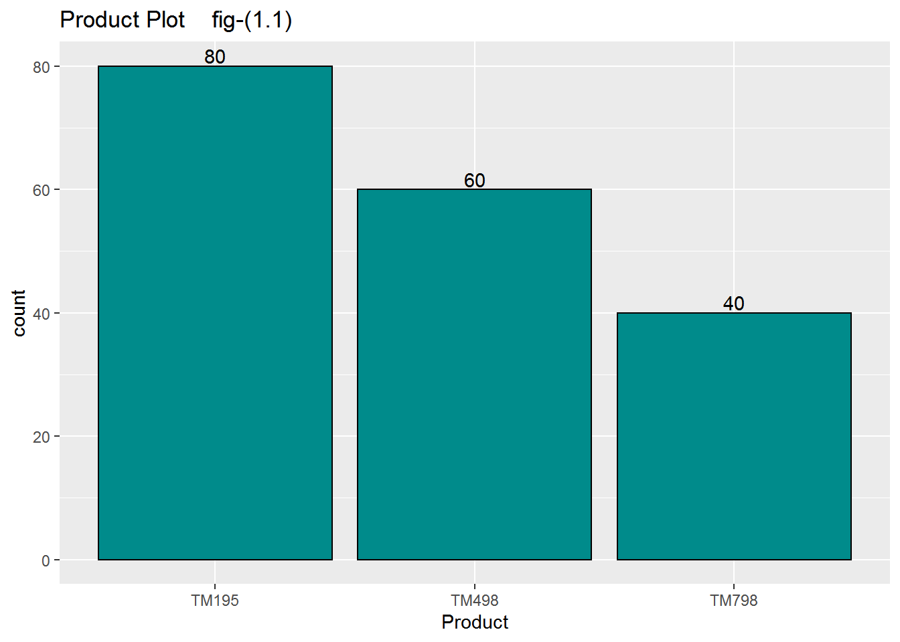
as we saw in this graph fig(1.1) we have three products in this dataset one name is TM195,2ND TM498, 3RD TM798. TM195 give us the highest number of count its mean the dataset provided us most of the user using Tm 195 treadmill then Tm498 then tm 798 respectively.
####Age,Education and Usage sumary and plots
#Statisticl Summary of Age
summary(cardio_data$Age)## Min. 1st Qu. Median Mean 3rd Qu. Max.
## 18.00 24.00 26.00 28.79 33.00 50.00sd(cardio_data$Age)## [1] 6.943498#ge plot
p1<- ggplot(data = cardio_data, aes(x = Age)) +
geom_histogram(bins = 30, color="black" ,fill="darkcyan") +
theme_grey() + ggtitle("Histogram of Age")+xlab("Age (Years)")
#Statisticl Summary of education
summary(cardio_data$Education)## 12 13 14 15 16 18 20 21
## 3 5 55 5 85 23 1 3#education plot
p2<-ggplot(data = cardio_data, aes(x = Education)) +
geom_bar(color="black" ,fill="darkcyan") +
theme_grey() + ggtitle(" Education Bar plot ")+
geom_text(stat = 'count',aes(label =..count.., vjust = -0.2))
#Statisticl Summary of usage
summary(cardio_data$Usage)## Min. 1st Qu. Median Mean 3rd Qu. Max.
## 2.000 3.000 3.000 3.456 4.000 7.000#usage plot
p3<-ggplot(data = cardio_data, aes(x = Usage)) +
geom_bar(color="black" ,fill="darkcyan") +
theme_grey() + ggtitle(" Usage of Machines ")+
geom_text(stat = 'count',aes(label =percent(round(..count../length(cardio_data$Usage),4)), vjust = -0.3))
#combining the plots
grid.arrange(p1,p2,p3,ncol=3)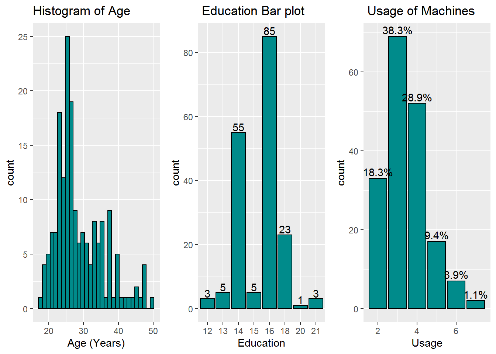
if we saw the summary of the age, mean is slightly higher then the median and the distrubtion of the age is right skwed.if we find the coefficient of variation we only have 24%. its tell us sample age is not equally distributed. 2nd towards education plot its tell us the data sample people mostly are the 16 years of education it has 85 counts. 3rd usage of treadmill mostly user use the traedmill 38% of the people using the treadmill three times a week 29% of the people using 4 times a week.18% using only two times.
#Statisticl Summary of Gender
summary(cardio_data$Gender)## Female Male
## 76 104ggplot(data = cardio_data, aes(x = Gender)) +
geom_bar(color="black" ,fill="darkcyan") +
theme_grey() + ggtitle("Gender Ploting")+
geom_text(stat = 'count',aes(label =..count.., vjust = -0.2))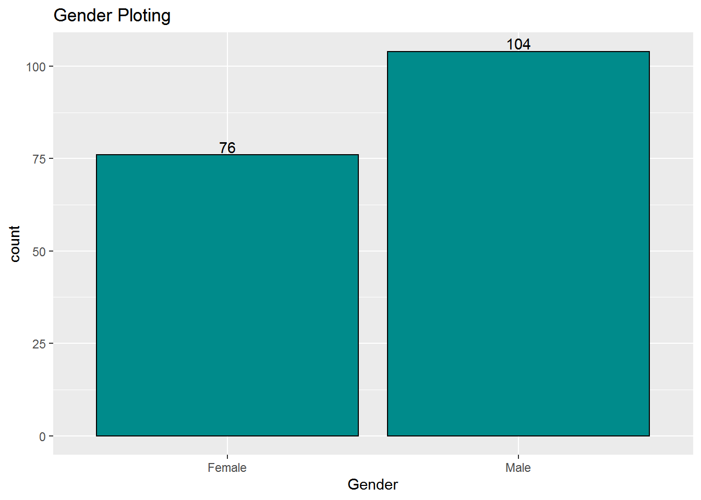
in this ploting the no of male users are 104 and female users are 76.
####Marital status and income summary and plot
#Statisticl Summary of Marital Status
summary(cardio_data$MaritalStatus)## Partnered Single
## 107 73#Maritel status plot
p1<- ggplot(data = cardio_data, aes(x = MaritalStatus)) +
geom_bar( color="black" ,fill="darkcyan") +
theme_grey() + ggtitle("User Marital Status")+
geom_text(stat = 'count',aes(label =..count.., vjust = -0.2))
#Statisticl Summary of income
summary(cardio_data$Income)## Min. 1st Qu. Median Mean 3rd Qu. Max.
## 29562 44059 50597 53720 58668 104581sd(cardio_data$Income)## [1] 16506.68#Income plot
p2<- ggplot(data = cardio_data, aes(x = Income)) +
geom_histogram(bins = 50, color="black" ,fill="darkcyan") +
theme_grey() + scale_x_continuous(labels = scales::comma) + ggtitle("Histogram Of User Income")
p3<- ggplot(data = cardio_data, aes(x = "",y=Income)) +
geom_boxplot(color="black" ,fill="darkcyan") +
theme_grey() + ggtitle("User Income")+ scale_y_continuous(labels = scales::comma)
#combining the plots
grid.arrange(p1,p2,p3,ncol=3)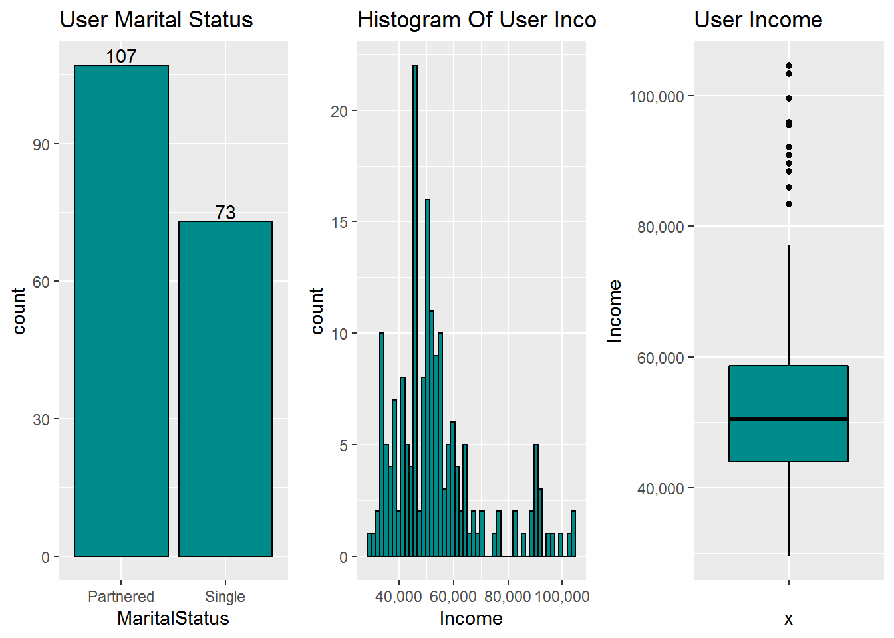
107 member has a partenered and 73 persons are single.user income has right skwed distribution because the mean is greater then median and coefficient of variation is 30%.
#statistical summary of Age and Gender
tapply(cardio_data$Age,cardio_data$Gender,summary)## $Female
## Min. 1st Qu. Median Mean 3rd Qu. Max.
## 19.00 24.00 26.50 28.57 33.00 50.00
##
## $Male
## Min. 1st Qu. Median Mean 3rd Qu. Max.
## 18.00 23.75 26.00 28.95 34.00 48.00ggplot(cardio_data,aes(x= Gender,y=Age)) +geom_boxplot(aes(colour = Gender), outlier.colour = "red",notch=TRUE) 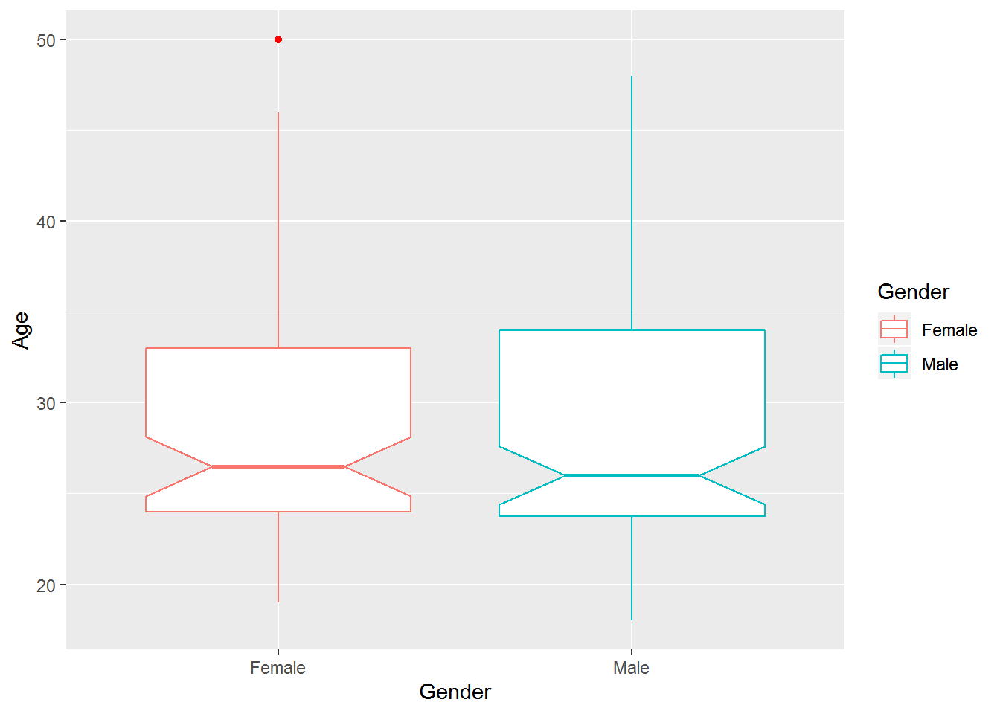
this is biveriable / mean two veriable are used to show there relation between them as per the statistical summary of the plot. its between gender vs age. we find out female minimum age we have in this dataset is 19 and maximum is 50 as compare to female male has minimum 18 and maximum 48.male data is more right skwed then female data.this visualization telling us we have one outlier in female category age 50year is beyound the Q3+1.5IQR so we concider it outlier.
####Age vs Product summary and plot
#statistical summary of Age and Product
tapply(cardio_data$Age,cardio_data$Product,summary)## $TM195
## Min. 1st Qu. Median Mean 3rd Qu. Max.
## 18.00 23.00 26.00 28.55 33.00 50.00
##
## $TM498
## Min. 1st Qu. Median Mean 3rd Qu. Max.
## 19.00 24.00 26.00 28.90 33.25 48.00
##
## $TM798
## Min. 1st Qu. Median Mean 3rd Qu. Max.
## 22.00 24.75 27.00 29.10 30.25 48.00ggplot(cardio_data,aes(x= Product,y=Age)) +geom_boxplot(aes(colour = Product), outlier.colour = "red",notch=FALSE) 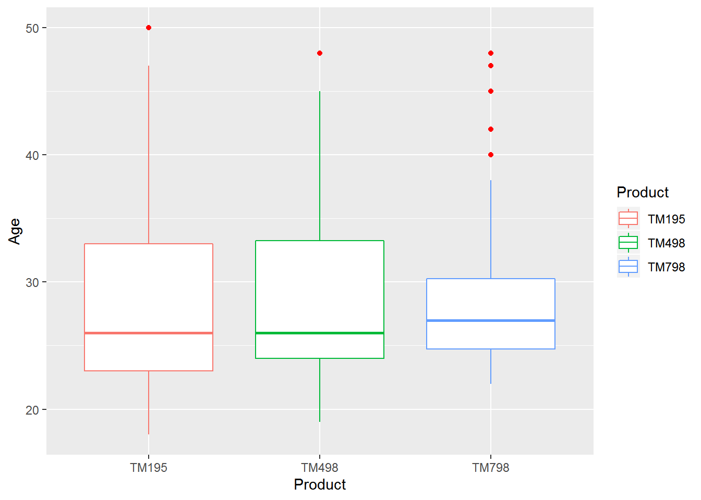
In this figure we plot TM type and the user age. so here we will try to find out what is the age group of people or how many people using each paticular machine. As we see the statistical summary and graphical plot TM195 is most popular TM type among user then Tm 498 then TM798 respectively. as we see Tm 195 users are min 18 to 46 year old, TM498 showing almost same resemblance but TM798 is only popular 22 to 37 years old people using it. we also facing some outlier in this plot but most of the outlier belong to TM798.
#statistical summary of Age and Gender
cardio_data$age_group <- cut(cardio_data$Age, breaks = c(0, 25, 35, 50),
labels = c("less then 25","25 to 35","greater then 35"))
tapply(cardio_data$Fitness,cardio_data$age_group,summary)## $`less then 25`
## Min. 1st Qu. Median Mean 3rd Qu. Max.
## 1.000 3.000 3.000 3.266 4.000 5.000
##
## $`25 to 35`
## Min. 1st Qu. Median Mean 3rd Qu. Max.
## 1.000 3.000 3.000 3.329 4.000 5.000
##
## $`greater then 35`
## Min. 1st Qu. Median Mean 3rd Qu. Max.
## 2.000 3.000 3.000 3.393 4.000 5.000 ggplot(cardio_data,aes(x= age_group,y=Fitness)) +geom_point(aes(col=Gender))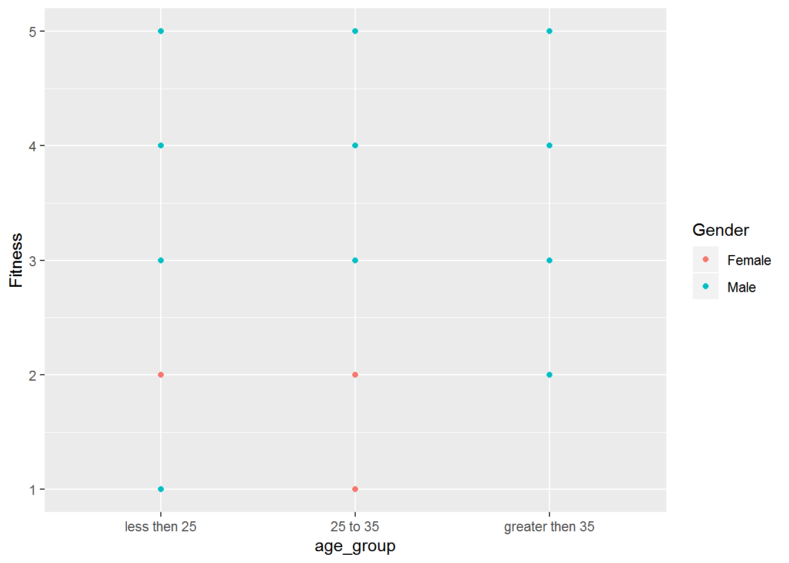
we divided the age of the users into three age groups and then we check the fitness lavel with the filter of Gender. fit of all we saw male are more fit then female user as compare to age group no female user belong to greater then 35 year old age group.
#statistical summary of income and product
tapply(cardio_data$Income,cardio_data$Product,summary)## $TM195
## Min. 1st Qu. Median Mean 3rd Qu. Max.
## 29562 38658 46617 46418 53439 68220
##
## $TM498
## Min. 1st Qu. Median Mean 3rd Qu. Max.
## 31836 44912 49460 48974 53439 67083
##
## $TM798
## Min. 1st Qu. Median Mean 3rd Qu. Max.
## 48556 58205 76569 75442 90886 104581ggplot(cardio_data,aes(x= Product,y=Income)) +geom_boxplot(aes(colour = Product), outlier.colour = "red",notch=FALSE) + scale_y_continuous(labels = scales::comma)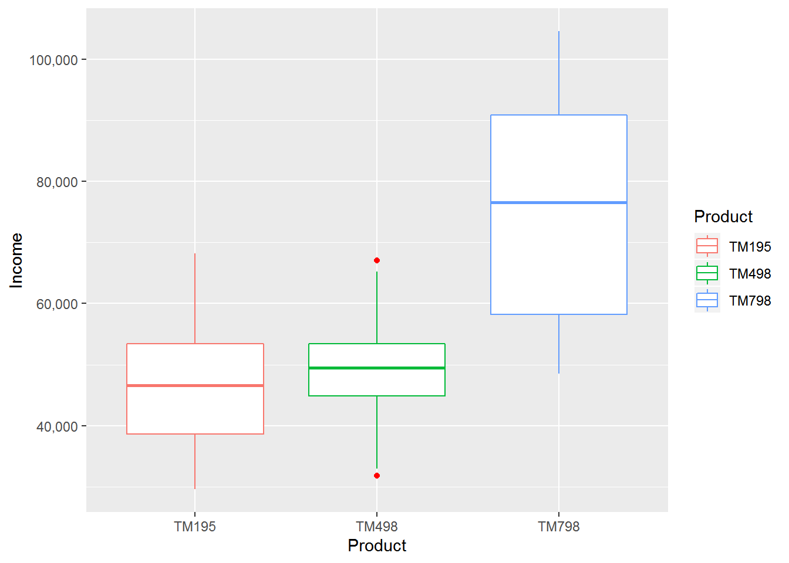
In this plot we find out TM798 only hit the high income customer its client has minimum 48 thousend and toward 1oo plus thousend. TM195 client has low salary as compared to other minimum 29 thousend to 68 thousend.
#statistical summary of usage and product
tapply(cardio_data$Usage,cardio_data$Product,summary)## $TM195
## Min. 1st Qu. Median Mean 3rd Qu. Max.
## 2.000 3.000 3.000 3.087 4.000 5.000
##
## $TM498
## Min. 1st Qu. Median Mean 3rd Qu. Max.
## 2.000 3.000 3.000 3.067 3.250 5.000
##
## $TM798
## Min. 1st Qu. Median Mean 3rd Qu. Max.
## 3.000 4.000 5.000 4.775 5.000 7.000ggplot(cardio_data,aes(x= Product,y=Usage)) +geom_boxplot(aes(fill = Product), outlier.colour = "red",notch=FALSE) + scale_y_continuous(labels = scales::comma)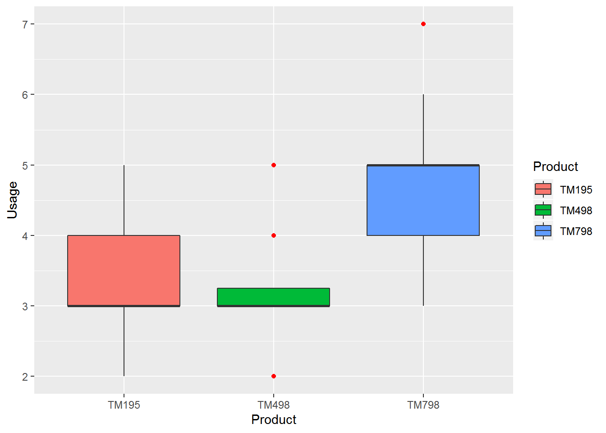
in this plot we analyse TM798 usage is higher the other two products and secound most using by the customer is TM195.
#statistical summary of usge and income
ggplot(cardio_data,aes(x=factor(Usage) ,y=Income)) +
geom_point(col="darkcyan")+
geom_smooth(method = "lm", se = FALSE)+
scale_y_continuous(labels =scales::comma)+
facet_wrap(~ Gender)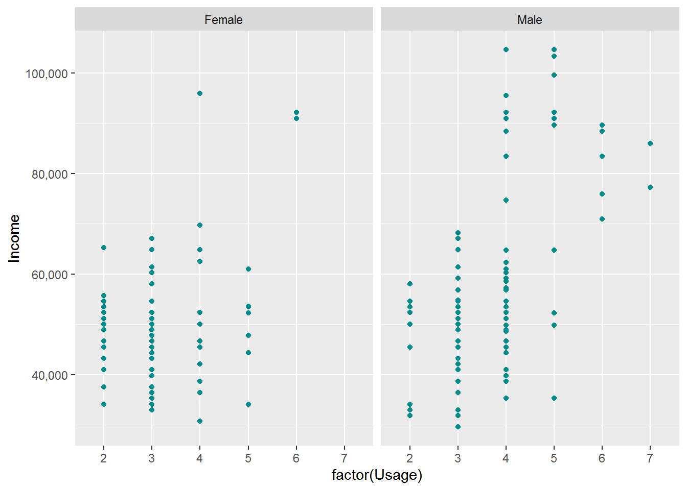
In this we analyse usage of the treadmill and the customer income has relation between then we saw when ever the income increase the usage of the product also increase.
tapply(cardio_data$Fitness,cardio_data$Product,summary)## $TM195
## Min. 1st Qu. Median Mean 3rd Qu. Max.
## 1.000 3.000 3.000 2.962 3.000 5.000
##
## $TM498
## Min. 1st Qu. Median Mean 3rd Qu. Max.
## 1.0 3.0 3.0 2.9 3.0 4.0
##
## $TM798
## Min. 1st Qu. Median Mean 3rd Qu. Max.
## 3.000 4.000 5.000 4.625 5.000 5.000ggplot(cardio_data,aes(x= Product,y=Fitness)) +geom_boxplot(aes(fill = Product), outlier.colour = "red",notch=FALSE) + scale_y_continuous(labels = scales::comma)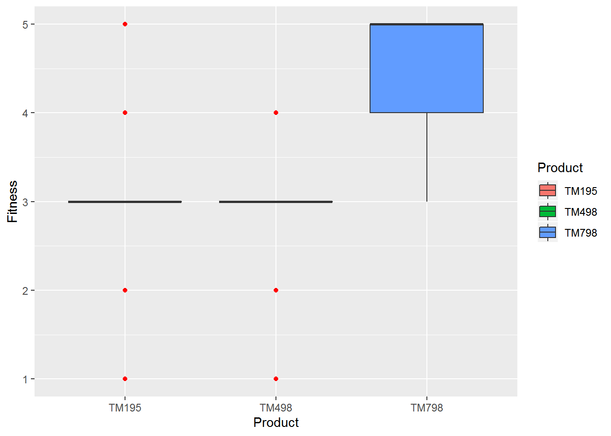
corrplot(cor(cardio_data[,6:9]))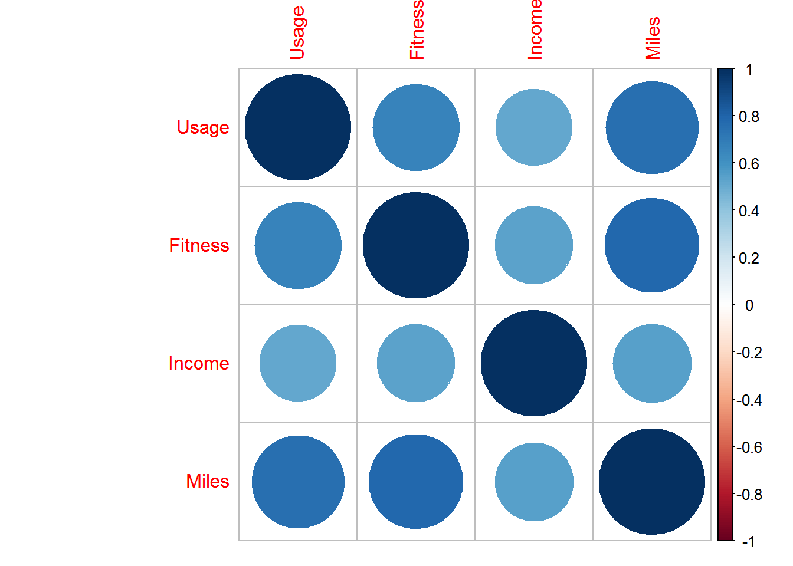
we draw correlation graph amoung numeric veriables and we find out great positive correlation amoung all of them.
#statistical summary of miles and fitness
z <- lm(Fitness ~ Miles, data = cardio_data)
coef(z)## (Intercept) Miles
## 1.81208079 0.01452627tapply(cardio_data$Miles,cardio_data$Fitness,summary)## $`1`
## Min. 1st Qu. Median Mean 3rd Qu. Max.
## 21.0 27.5 34.0 34.0 40.5 47.0
##
## $`2`
## Min. 1st Qu. Median Mean 3rd Qu. Max.
## 38.00 43.25 47.00 51.69 53.00 85.00
##
## $`3`
## Min. 1st Qu. Median Mean 3rd Qu. Max.
## 53.00 75.00 85.00 87.19 95.00 170.00
##
## $`4`
## Min. 1st Qu. Median Mean 3rd Qu. Max.
## 74.0 106.0 127.0 131.6 160.0 212.0
##
## $`5`
## Min. 1st Qu. Median Mean 3rd Qu. Max.
## 80.0 150.0 170.0 178.9 200.0 360.0ggplot(cardio_data,aes(x=factor(Fitness),y=Miles)) +
geom_point(aes(shape=factor(MaritalStatus),col=factor(MaritalStatus)))+
geom_smooth(method = "lm", se = FALSE)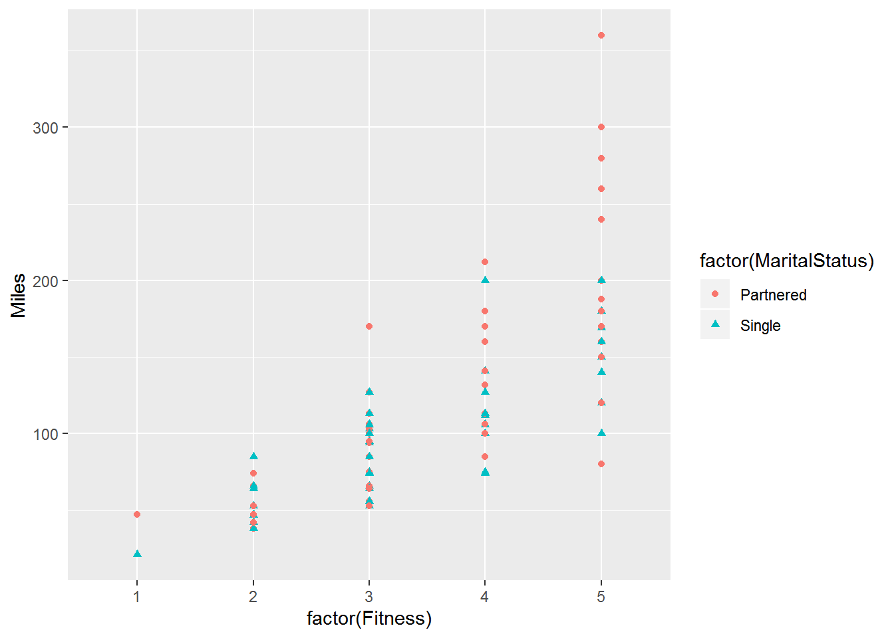
#geom_abline(intercept = 1.81, slope = 0.01)here we noticed fitness increase with respect to miles increase its shows us positive correlation and we filter it with Marital status. we saw customer who has partnered has more fit and more miles cover as respect to who are single.
plot(aggregate(Fitness~Usage,data= cardio_data,mean),type = "b",main="Fitness vs usage",col="darkcyan")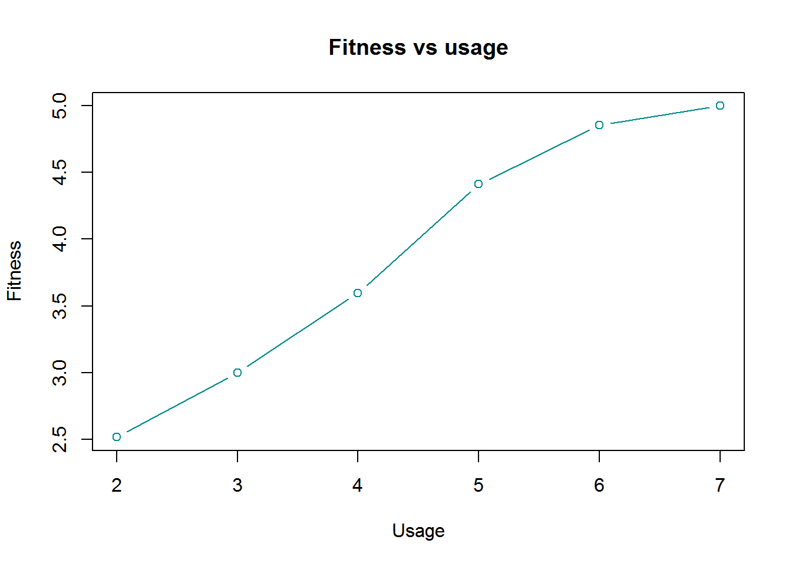
we noticed fitness and usage has positive correlation.
ggplot(cardio_data,aes(x=Age ,y=Income)) +
geom_point(col="darkcyan")+
scale_y_continuous(labels =scales::comma)+
facet_wrap(~ Gender)+
geom_smooth(method = "lm", se = FALSE)+
theme(strip.background = element_rect(fill=c("darkcyan")))+
ggtitle("Age vs Income Plot ")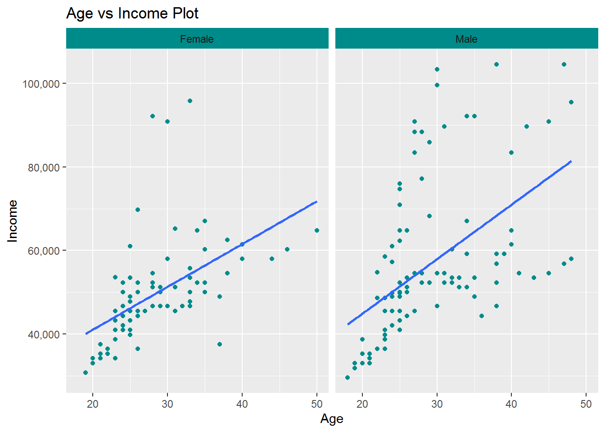
we saw some positive correlation between age and income with repect to gender. we also find out the slope of the line in male panel is higher then female panel its mean male age and income has more stronger correlation between them as respect to female.
ggplot(cardio_data,aes(x=Education ,y=Income)) +
geom_point(col="darkcyan")+
scale_y_continuous(labels =scales::comma)+
facet_wrap(~ Gender)+
geom_smooth(method = "lm", se = FALSE)+
theme(strip.background = element_rect(fill=c("darkcyan")))+
ggtitle("Education vs Income Plot ")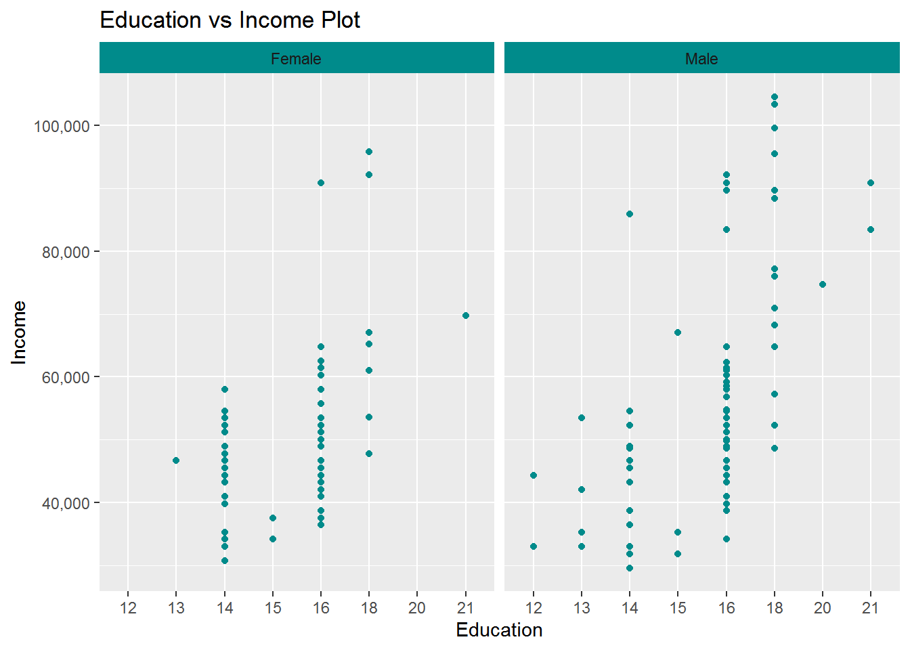
Education and income also has positive correlation with respect to gender.graph showing us male are getting higher salary then female because the slope of the line is higher in male graph.
ggplot(cardio_data,aes(x=Age ,y=Miles)) +
geom_point(col="darkcyan")+
scale_y_continuous(labels =scales::comma)+
facet_wrap(~ Gender)+
geom_smooth(method = "lm", se = FALSE)+
theme(strip.background = element_rect(fill=c("darkcyan")))+
ggtitle("AGE Vs Miles")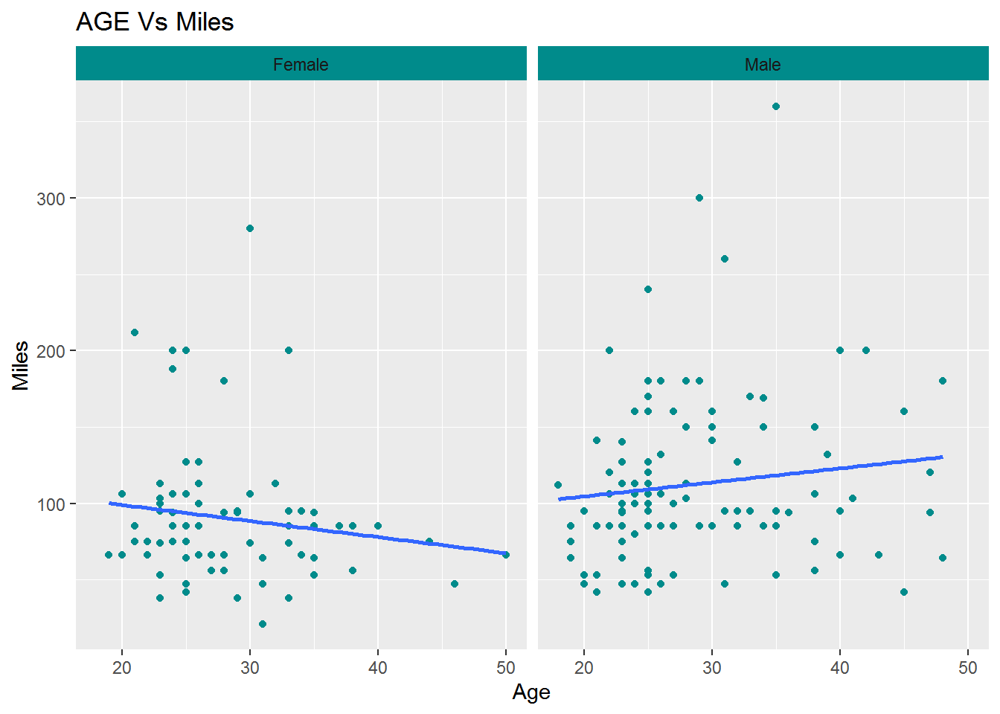
here we saw some interesting ehaviour male has positive coorrelationbetween age and miles its mean male customers are covering miles increase with respect to age. But female has negative correlation between age and miles covering.
The data shows prodct TM195 is most popular ine AGE group and on weekly usage basis but product TM195 target only 29 thousend to 70 thousend income customer but with respect to this product TM 798 target much higher range of thecustomer.Product TM798 also gives showing us a good result in weekly useage.But Product TM498 is showing us the negetive correlation in usage and Income sides. This data also shows us when we increase the weekly use we increse the miles and also we increase the fitness rate. this data shows us the customers who has partenerd spending more time and more fit then those who are single. This data tells us male are getting paid more then female customers and female customers reduce the mile with respect to age.
for the company interest when the company design the new product company has to take attention on female users because female users health condiction is worst then male users. upon the this interest we have to design the product where female users build an interest init and also concider the female users income codition.
##*************THE END *************